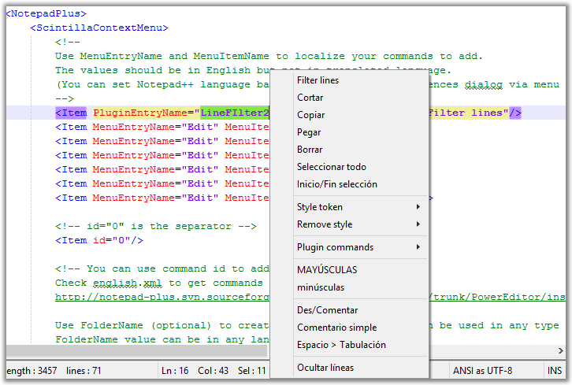

| Précédent: Menu principal | Eléments d'interface graphique | Suivant: Fenêtres Ancrables |
 Le menu contextuel peut être atteint par clic droit n'importe où dans l'écran d'édition. Il permet d'accéder rapidement aux commandes fréquemment utilisées et il est configurable par l'utilisateur. Pour modifier le contenu du menu contextuel, vous devez éditer le fichier contextMenu.xml. Vous pouvez l'ouvrir comme n'importe quel autre fichier; toutefois, peut s'en charger. Nous vous renvoyons à NpWiki++ pour la syntaxe spécifique de ce fichier XML. Les commentaires à l'intérieur du fichier devraient également vous aider.